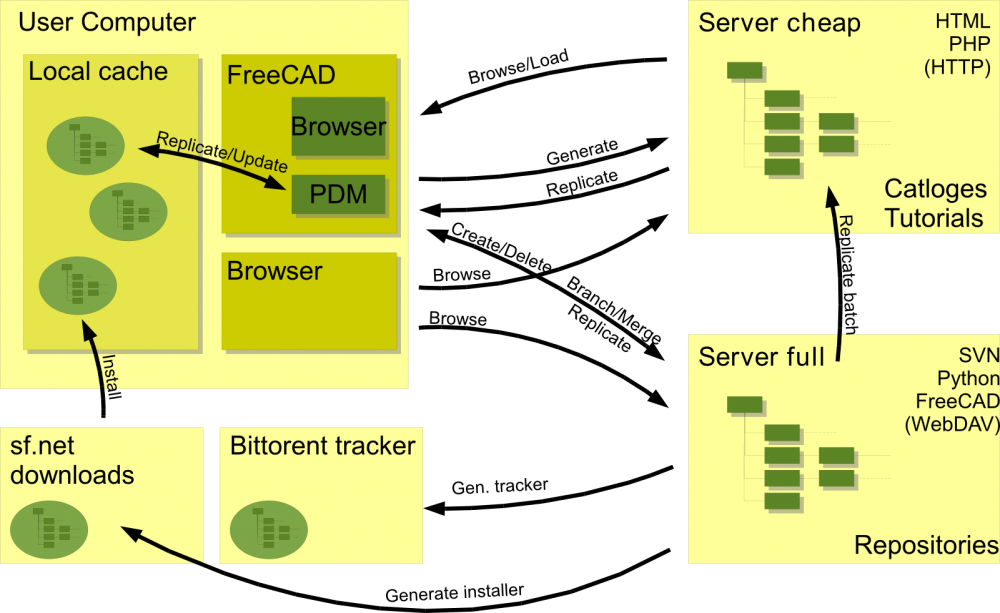

Этот проект задумывался как ресурсная база FreeCAD, он является частью плана развития.
Цели и принципы
Это проект разрабатываемого ПО, с целью реализации возможностей PDM . Речь идет о реализации необходимых частей и кусочков.
Этапы развития, планируются здесь и отслеживаются в разделе Issue системы отслеживания ошибок чтобы получить хорошо сформированный список изменений: Issue tracker
Результат
- Система контроля версий для больших конструкторских проектов
- для работы с другими пользователями через интернет; Сотрудничество
- Каталоги стандартных частей доступные при работающем, а также не работающем соединении с интернетом.
Мозговой штурм
то как сделана у других
Вот некоторые ссылки на сопоставимые коммерческие продукты:
- PTC's PDMLink - "...when all product stakeholders are accessing a single, trusted, central data repository, manufacturers have the power to expertly manage all forms of digital product development data ... PDMLink is the ideal solution. Web-based for easy enterprise-wide access, this industry-proven product data management (PDM) system supports geographically dispersed teams while managing critical processes such as change/configuration management, and detailed design."
- Aras Corp. Aras PLM Software - They appear to offer Open Source solutions, this may be worth investigating further...
Варианты Использования
Предложенное Charles
Конечно будут различные типы людей использующих это ПО для по различным причинам и им могут потребоваться различные PDM решения, было бы здорово найти решение (в этой области) которое будет универсально. Я вижу следующие различные методы разработки (также должны быть и другие):
- Individual users - they will probably be a significant percentage of people working this way and they may be fairly self-contained, but revision control and branching still useful. Many of these people may be working in parts of the world where internet access is flaky or expensive, so they maybe working offline for long periods. Would be nice to make these individual projects very easily replicable by other people if it is a good piece of work - so the design can be evolved in multiple directions at once - lots of Darwinian evolution and faster exporing of the solution space
- Небольшие команды людей, работающих вместе - возможно, из одного и того-же учебного заведения - но каждый человек в отдельности может захотеть свободы в изучения всех аспектов(сторон) проекта, а не быть жестко назначенным к определенной части проекта. Мы находим это, в основном позволяющим больше вариантов которые просто изучить и предоставляют большую гибкость.
- Большой конструкторский проект с открытым исходным кодом - множество членов распыленных географически. Зеркала open-source проектов ПО - где , похоже, лбщая тенденция к распределеннм системам (в действительности Python Перемещен на DVCS в прошлом месяце). Я вижу проектирование и инженерная деятельность движутся в схожем направлении. Так что я думаю это одна из причин серьезно задуматься, о том как распределенная система будет работать в CAD - и если мы решим это, мы получим преимущество над другими поставщиками комерческих CAD! Я убежден, чо это решение (если мы не будем работать на ним,другие разработчики CAD будут!)
- Болеее жесткая иерархия проекта - это могут быть некоторые проекты где команды предпочитают договоренность, но я вижу это только внутри популярных компаний.
The Blendswap website
Blendswap - in thier own words - is "...the place to find and share blends with the entire world. You make awesome blends, share them in the biggest repository of open source 3D models made with the awesome Open Source 3D suite Blender."
Blender is a very popular open source '3D content creation suite'.
Whilst not a CAD program, there are many parallels to be drawn and lessons to be learnt from the way Blender and it's community has gone about doing things.
Blendswap is an excellent example of an online repository. It's key features that I beleive we can learn from are:
- Provides detailed thumbnail images on the website. This allows people to freely browse and find content quickly.
- The models (blend files) come with clear license details (these details are also quicky viewable at a glance from the thumbnail, via a Creative Commons logo).
Возможные системы контроля версий
Это лишь шажок к размышлению о системах контроля версий и способов их использования в разработке современного ПО. Существую два различных подхода к этому вопросу:
Хотя Варианты Использования требуют распределенных систем контроля версий, все названные имеет серьезный недостаток. Если вы клонируете репозиторий все предыдущие версии будут скопированы на ваш компьютер. Которые в случае данных CAD , могут измеряться Мб размерами. В отличие от них, системы с централизированным сервером производят только проверку изменений и поэтому передают относительно небольшой объем данных.
Лицензия
В распределенных интернет проектах необходимо чтобы каждый документ обладал ясной лицензией. Это очень важно если вы думает о каталогах. Каталог частей используемых в проекте (свободных или несвободных) и необходимо чтобы они обладали ясной лицензией что сделает их использование прозрачным(ясным). Так как существуют различные системы лицензирования, здесь указаны возможные лицензии CAD файлов:
Creative Commons
Лицензия CC очень популярна для творческих материалов, вы можете найти её описание здесь:
http://creativecommons.org
ISO 16016
fraganaut01 дает на способ подключить другую систему лицензирования для CAD:
- Авторские права поставщика (небольшие ограничения)
- См. уведомление о защите ISO16016 (нет специальных ограничений)
- Конфиденциально, только для внутреннего использования. Используется только обязательство по обеспечению конфиденциальности. См. уведомление о защите ISO16016
- Конфиденциально, только для внутреннего использования. См. уведомление о защите ISO16016
- Любое распространение только с прямого согласия составителя
Конструирование
Все контролируемые данные, каталоги, учебники и.т.д, должны обладать каким-либо представлением в FreeCAD. Все это можно свести к понятию Ресурс. Там должен быть класс разработки хранящий информацию о ресурсе и различный в разных ситуациях.
Архитектура
Этот тип услуг по определению является ограниченным не только машиной пользователя. Больше информации об Облачных Вычислениях предоставляемых различными сервисами на разных серверах. Можно выделить четыре типа серверов:
- Дешевый сервер - LAMP
- Полноценный сервер (например Ubuntu/Debian сервер)
- Сервер загрузок - например sf.net
- BitTorrent tracker
Это создает следующую картину:

Организация
Исследование
С начало необходимо проверить различные варианты систем контроля версий. Чтобы получить точные цифры от том как видут себя CAD данные.
Проектирование
Проектирование классов для для основных Ресурсов.
Дальнейшие действия
- Создать тестовые хранилища на Сервере и на двух локальных машинах
- Тестирование различных вариантов использования
{kind=link}